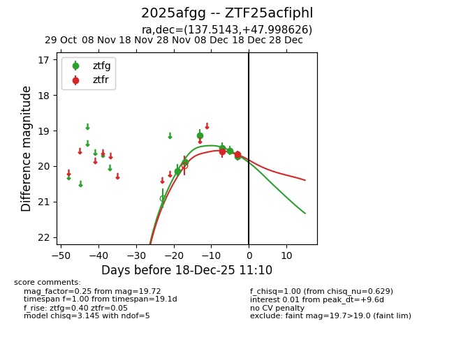
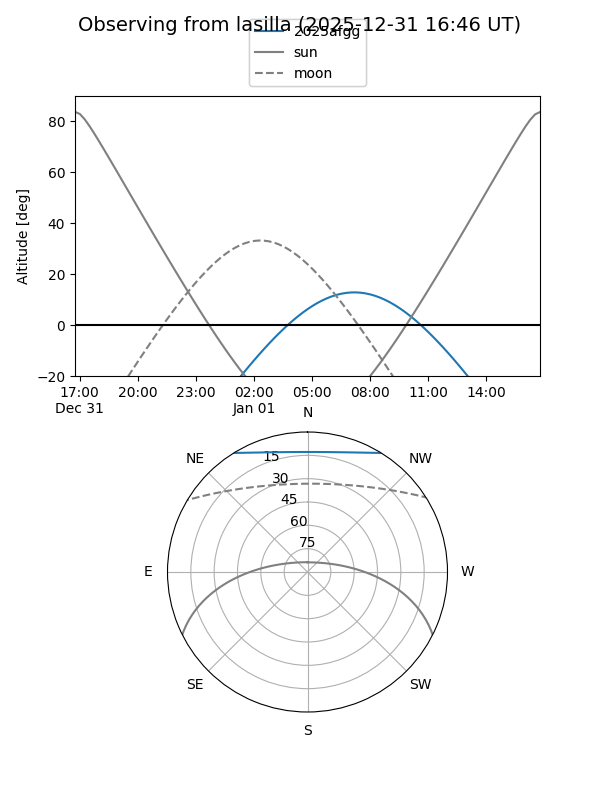
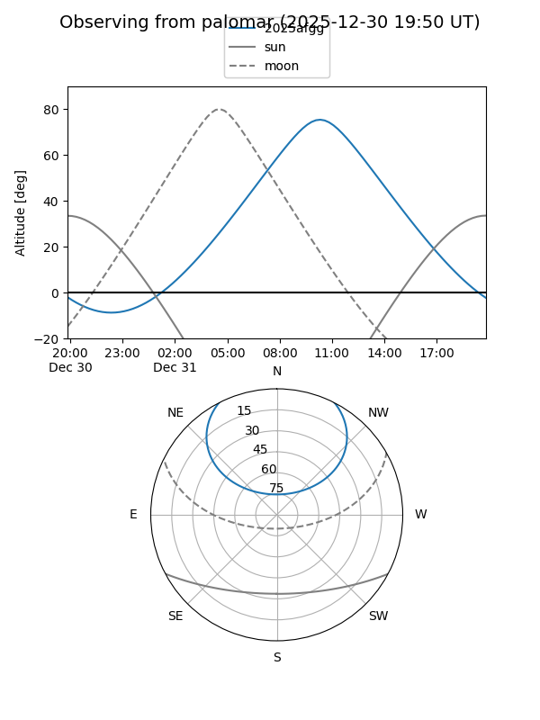
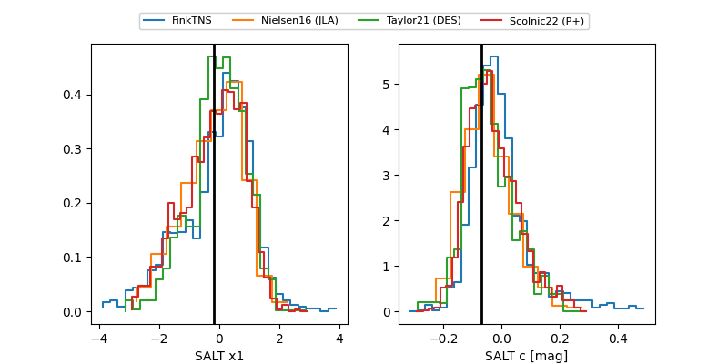

2025afgg
Target 2025afgg at 2025-12-20 12:39
Aliases and brokers:
FINK: fink-portal.org/ZTF25acfiphl
Lasair: lasair-ztf.lsst.ac.uk/objects/ZTF25acfiphl
ALeRCE: alerce.online/object/ZTF25acfiphl
TNS: wis-tns.org/object/2025afgg
YSE: ziggy.ucolick.org/yse/transient_detail/2025afgg
alt names
ZTF25acfiphl (ztf,fink_ztf)
2025afgg (tns,yse)
Coordinates:
equatorial (ra, dec) = 137.5143,+47.99863
equatorial (HMS+DMS) = 09:10:03.43,+47:59:55.05
galactic (l, b) = (171.3800,+42.64810)
Flags:
Photometry:
last ztfg=19.72, ztfr=19.91
6 ztfg, 3 ztfr detections
Lightcurve

Visibility


Additional plots
